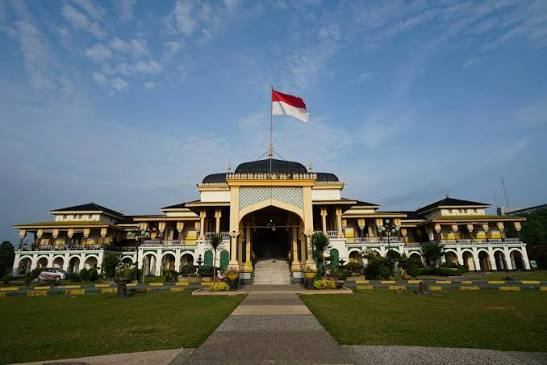

Wisata Liburan Kota Medan
Home
|
Kontak
Daftar Tempat Wisata
Berikut adalah dua tempat wisata yang ada di Kota Medan.
Istana Maimun
Masjid Raya Al-Mashun
Istana Maimun

Lihat Detail
Masjid Raya Al-Mashun
Lihat Detail